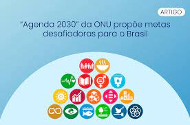

Titulo
 A Agenda 2030 da ONU é um plano global para o desenvolvimento sustentável que visa erradicar a pobreza, proteger o planeta e garantir a prosperidade para todos. Ela é composta por 17 Objetivos de Desenvolvimento Sustentável (ODS) e 169 metas, que juntos fornecem um roteiro para o desenvolvimento sustentável até 2030. Os 17 Objetivos de Desenvolvimento Sustentável foram adotados pela Assembleia Geral das Nações Unidas em 2015 e refletem os principais desafios globais que precisam ser enfrentados para alcançar um futuro sustentável e equitativo. Eles abrangem temas como erradicação da pobreza, igualdade de gênero, ação climática, desenvolvimento econômico e paz e justiça. Cada um dos Objetivos de Desenvolvimento Sustentável tem suas próprias metas específicas que ajudam a orientar e monitorar o progresso em direção a esses objetivos. As metas incluem a redução da pobreza, a promoção da saúde e bem-estar, a igualdade de gênero, a energia limpa, a conservação da biodiversidade, a promoção da paz e justiça e muitas outras..jpg) Os ODS são interdependentes e inter-relacionados, o que significa que o sucesso em alcançar um objetivo depende do sucesso em alcançar outros objetivos. Por exemplo, a erradicação da pobreza (Objetivo 1) é essencial para alcançar a igualdade de gênero (Objetivo 5), já que a pobreza muitas vezes afeta desproporcionalmente mulheres e meninas.
A Agenda 2030 da ONU é uma chamada para ação global, que requer o envolvimento de todos os setores da sociedade, incluindo governos, setor privado, sociedade civil e cidadãos. Ela reconhece que a mudança só será possível por meio de parcerias e colaboração global.
Em resumo, a Agenda 2030 da ONU e seus 17 Objetivos de Desenvolvimento Sustentável e 169 metas fornecem um plano ambicioso e abrangente para um futuro sustentável e equitativo para todos. É um chamado para ação global que exige o envolvimento e a colaboração de todos nós para alcançar um mundo melhor para as gerações presentes e futuras
Os ODS são interdependentes e inter-relacionados, o que significa que o sucesso em alcançar um objetivo depende do sucesso em alcançar outros objetivos. Por exemplo, a erradicação da pobreza (Objetivo 1) é essencial para alcançar a igualdade de gênero (Objetivo 5), já que a pobreza muitas vezes afeta desproporcionalmente mulheres e meninas.
A Agenda 2030 da ONU é uma chamada para ação global, que requer o envolvimento de todos os setores da sociedade, incluindo governos, setor privado, sociedade civil e cidadãos. Ela reconhece que a mudança só será possível por meio de parcerias e colaboração global.
Em resumo, a Agenda 2030 da ONU e seus 17 Objetivos de Desenvolvimento Sustentável e 169 metas fornecem um plano ambicioso e abrangente para um futuro sustentável e equitativo para todos. É um chamado para ação global que exige o envolvimento e a colaboração de todos nós para alcançar um mundo melhor para as gerações presentes e futuras
17 Objetivos da ONU 2030
| 1.Erradicação da Pobreza |
|---|
| 2.Fome Zero |
| 3.Saúde e Bem Estar |
| 4.Educação de Qualidade |
| 5.Igualdade de Gênero |
| 6.Água Potável e Saneamento |
| 7.Energia Limpa e Acessível |
| 8.Trabalho Decente e Crescimento Econômico |
| 9.Industria, Inovação e Infraestrutura |
| 10.Redução das Desigualdades |
| 11.Cidades e Comunidades Sustentáveis |
| 12.Consumo e Produção Responsáveis |
| 13.Ação Contra a Mudança Global do Clima |
| 14.Vida na Água |
| 15.Vida Terrestre |
| 16.Paz, Justiça e Instituições Eficazes |
| 17.Parcerias e Meios de Implementação |
Clique aqui para ver as 169 metas da ONU para 2030⦁ até 2030, erradicar a pobreza extrema para todas as pessoas em todos os lugares, atualmente medida como pessoas vivendo com menos de US$ 1,25 por dia. ⦁ até 2030, reduzir pelo menos à metade a proporção de homens, mulheres e crianças, de todas as idades, que vivem na pobreza, em todas as suas dimensões, de acordo com as definições nacionais. ⦁ até 2030, reduzir pelo menos à metade a proporção de homens, mulheres e crianças, de todas as idades, que vivem na pobreza, em todas as suas dimensões, de acordo com as definições nacionais. ⦁ implementar, em nível nacional, medidas e sistemas de proteção social apropriados, para todos, incluindo pisos, e até 2030 atingir a cobertura substancial dos pobres e vulneráveis. ⦁ até 2030, construir a resiliência dos pobres e daqueles em situação de vulnerabilidade, e reduzir a exposição e vulnerabilidade destes a eventos extremos relacionados com o clima e outros choques e desastres econômicos, sociais e ambientais. ⦁ garantir uma mobilização significativa de recursos a partir de uma variedade de fontes, inclusive por meio do reforço da cooperação para o desenvolvimento, de forma a proporcionar meios adequados e previsíveis para que os países em desenvolvimento, em particular os países de menor desenvolvimento relativo, implementem programas e políticas para acabar com a pobreza em todas as suas dimensões. ⦁ criar marcos políticos sólidos, em níveis nacional, regional e internacional, com base em estratégias de desenvolvimento a favor dos pobres e sensíveis a gênero, para apoiar investimentos acelerados nas ações de erradicação da pobreza. ⦁ até 2030, acabar com a fome e garantir o acesso de todas as pessoas, em particular os pobres e pessoas em situações vulneráveis, incluindo crianças, a alimentos seguros, nutritivos e suficientes durante todo o ano. ⦁ até 2030, acabar com todas as formas de desnutrição, inclusive pelo alcance até 2025 das metas acordadas internacionalmente sobre desnutrição crônica e desnutrição em crianças menores de cinco anos de idade, e atender às necessidades nutricionais de meninas adolescentes, mulheres grávidas e lactantes e pessoas idosas. ⦁ até 2030, dobrar a produtividade agrícola e a renda dos pequenos produtores de alimentos, particularmente das mulheres, povos indígenas, agricultores familiares, pastores e pescadores, inclusive por meio de acesso seguro e igual à terra, outros recursos produtivos e insumos, conhecimento, serviços financeiros, mercados e oportunidades de agregação de valor e de emprego não-agrícola. ⦁ até 2030, garantir sistemas sustentáveis de produção de alimentos e implementar práticas agrícolas resilientes, que aumentem a produtividade e a produção, que ajudem a manter os ecossistemas, que fortaleçam a capacidade de adaptação às mudança do clima, às condições meteorológicas extremas, secas, inundações e outros desastres, e que melhorem progressivamente a qualidade da terra e do solo. ⦁ até 2020, manter a diversidade genética de sementes, plantas cultivadas, animais de criação e domesticados e suas respectivas espécies selvagens, inclusive por meio de bancos de sementes e plantas diversificados e adequadamente geridos em nível nacional, regional e internacional, e garantir o acesso e a repartição justa e equitativa dos benefícios decorrentes da utilização dos recursos genéticos e conhecimentos tradicionais associados, conforme acordado internacionalmente. ⦁ aumentar o investimento, inclusive por meio do reforço da cooperação internacional, em infraestrutura rural, pesquisa e extensão de serviços agrícolas, desenvolvimento de tecnologia, e os bancos de genes de plantas e animais, de maneira a aumentar a capacidade de produção agrícola nos países em desenvolvimento, em particular nos países de menor desenvolvimento relativo. ⦁ corrigir e prevenir as restrições ao comércio e distorções nos mercados agrícolas mundiais, inclusive por meio da eliminação paralela de todas as formas de subsídios à exportação e todas as medidas de exportação com efeito equivalente, de acordo com o mandato da Rodada de Desenvolvimento de Doha. ⦁ adotar medidas para garantir o funcionamento adequado dos mercados de commodities de alimentos e seus derivados, e facilitar o acesso oportuno à informação de mercado, inclusive sobre as reservas de alimentos, a fim de ajudar a limitar a volatilidade extrema dos preços dos alimentos. ⦁ até 2030, reduzir a taxa de mortalidade materna global para menos de 70 mortes por 100.000 nascidos vivos. ⦁ até 2030, acabar com as mortes evitáveis de recém-nascidos e crianças menores de 5 anos, com todos os países objetivando reduzir a mortalidade neonatal para pelo menos até 12 por 1.000 nascidos vivos e a mortalidade de crianças menores de 5 anos para pelo menos até 25 por 1.000 nascidos vivos. ⦁ até 2030, acabar com as epidemias de AIDS, tuberculose, malária e doenças tropicais negligenciadas, e combater a hepatite, doenças transmitidas pela água, e outras doenças transmissíveis. ⦁ até 2030, reduzir em um terço a mortalidade prematura por doenças nãotransmissíveis por meio de prevenção e tratamento, e promover a saúde mental e o bem-estar. ⦁ reforçar a prevenção e o tratamento do abuso de substâncias, incluindo o abuso de drogas entorpecentes e uso nocivo do álcool. ⦁ até 2030, reduzir pela metade as mortes e os ferimentos globais por acidentes em estradas. ⦁ até 2030, assegurar o acesso universal aos serviços de saúde sexual e reprodutiva, incluindo o planejamento familiar, informação e educação, bem como a integração da saúde reprodutiva em estratégias e programas nacionais. ⦁ atingir a cobertura universal de saúde, incluindo a proteção do risco financeiro, o acesso a serviços de saúde essenciais de qualidade e o acesso a medicamentos e vacinas essenciais seguros, eficazes, de qualidade e a preços acessíveis para todos. ⦁ até 2030, reduzir substancialmente o número de mortes e doenças por produtos químicos perigosos e por contaminação e poluição do ar, da água e do solo. ⦁ fortalecer a implementação da Convenção-Quadro para o Controle do Tabaco da Organização Mundial de Saúde em todos os países, conforme apropriado. ⦁ apoiar a pesquisa e o desenvolvimento de vacinas e medicamentos para as doenças transmissíveis e não transmissíveis, que afetam principalmente os países em desenvolvimento, proporcionar o acesso a medicamentos e vacinas essenciais a preços acessíveis, de acordo com a Declaração de Doha sobre o Acordo TRIPS e Saúde Pública, que afirma o direito dos países em desenvolvimento de utilizarem plenamente as disposições do Acordo sobre os Aspectos dos Direitos de Propriedade Intelectual Relacionados ao Comércio (TRIPS, na sigla em inglês) sobre flexibilidades para proteger a saúde pública e, em particular, proporcionar o acesso a medicamentos para todos. ⦁ aumentar substancialmente o financiamento da saúde e o recrutamento, desenvolvimento, treinamento e retenção do pessoal de saúde nos países em desenvolvimento, especialmente nos países de menor desenvolvimento relativo e nos pequenos Estados insulares em desenvolvimento. ⦁ reforçar a capacidade de todos os países, particularmente os países em desenvolvimento, para o alerta precoce, redução de riscos e gerenciamento de riscos nacionais e globais à saúde. ⦁ até 2030, garantir que todas as meninas e meninos completem o ensino primário e secundário livre, equitativo e de qualidade, que conduza a resultados de aprendizagem relevantes e eficazes. ⦁ até 2030, garantir que todos os meninos e meninas tenham acesso a um desenvolvimento de qualidade na primeira infância, cuidados e educação pré-escolar, de modo que estejam prontos para o ensino primário. ⦁ até 2030, assegurar a igualdade de acesso para todos os homens e mulheres à educação técnica, profissional e superior de qualidade, a preços acessíveis, incluindo universidade. ⦁ até 2030, aumentar substancialmente o número de jovens e adultos que tenham habilidades relevantes, inclusive competências técnicas e profissionais, para emprego, trabalho decente e empreendedorismo. ⦁ até 2030, eliminar as disparidades de gênero na educação e garantir a igualdade de acesso a todos os níveis de educação e formação profissional para os mais vulneráveis, incluindo as pessoas com deficiência, povos indígenas e as crianças em situação de vulnerabilidade. ⦁ até 2030, garantir que todos os jovens e uma substancial proporção dos adultos, homens e mulheres, estejam alfabetizados e tenham adquirido o conhecimento básico de matemática. ⦁ até 2030, garantir que todos os alunos adquiram conhecimentos e habilidades necessárias para promover o desenvolvimento sustentável, inclusive, entre outros, por meio da educação para o desenvolvimento sustentável e estilos de vida sustentáveis, direitos humanos, igualdade de gênero, promoção de uma cultura de paz e nãoviolência, cidadania global, e valorização da diversidade cultural e da contribuição da cultura para o desenvolvimento sustentável. ⦁ a construir e melhorar instalações físicas para educação, apropriadas para crianças e sensíveis às deficiências e ao gênero e que proporcionem ambientes de aprendizagem seguros, não violentos, inclusivos e eficazes para todos. até 2020 substancialmente ampliar globalmente o número de bolsas de estudo disponíveis para os países em desenvolvimento, em particular, os países de menor desenvolvimento relativo, pequenos Estados insulares em desenvolvimento e os países africanos, para o ensino superior, incluindo programas de formação profissional, de tecnologia da informação e da comunicação, programas técnicos, de engenharia e científicos em países desenvolvidos e outros países em desenvolvimento. ⦁ até 2030, substancialmente aumentar o contingente de professores qualificados, inclusive por meio da cooperação internacional para a formação de professores, nos países em desenvolvimento, especialmente os países de menor desenvolvimento relativo e pequenos Estados insulares em desenvolvimento. ⦁ acabar com todas as formas de discriminação contra todas as mulheres e meninas em toda parte. ⦁ eliminar todas as formas de violência contra todas as mulheres e meninas nas esferas públicas e privadas, incluindo o tráfico e exploração sexual e de outros tipos. ⦁ eliminar todas as práticas nocivas, como os casamentos prematuros, forçados e de crianças e mutilações genitais femininas. ⦁ reconhecer e valorizar o trabalho de assistência e doméstico não remunerado, por meio da disponibilização de serviços públicos, infraestrutura e políticas de proteção social, bem como a promoção da responsabilidade compartilhada dentro do lar e da família, conforme os contextos nacionais. ⦁ garantir a participação plena e efetiva das mulheres e a igualdade de oportunidades para a liderança em todos os níveis de tomada de decisão na vida política, econômica e pública. ODS 5 - Alcançar a igualdade de gênero e empoderar todas as mulheres e meninas. ⦁ assegurar o acesso universal à saúde sexual e reprodutiva e os direitos reprodutivos, como acordado em conformidade com o Programa de Ação da Conferência Internacional sobre População e Desenvolvimento e com a Plataforma de Ação de Pequim e os documentos resultantes de suas conferências de revisão. ⦁ a empreender reformas para dar às mulheres direitos iguais aos recursos econômicos, bem como o acesso a propriedade e controle sobre a terra e outras formas de propriedade, serviços financeiros, herança e os recursos naturais, de acordo com as leis nacionais. ⦁ aumentar o uso de tecnologias de base, em particular as tecnologias de informação e comunicação, para promover o empoderamento das mulheres. ⦁ adotar e fortalecer políticas sólidas e legislação aplicável para a promoção da igualdade de gênero e o empoderamento de todas as mulheres e meninas, em todos os níveis. ⦁ até 2030, alcançar o acesso universal e equitativo à água potável, segura e acessível para todos. ⦁ até 2030, alcançar o acesso a saneamento e higiene adequados e equitativos para todos, e acabar com a defecação a céu aberto, com especial atenção para as necessidades das mulheres e meninas e daqueles em situação de vulnerabilidade. ⦁ até 2030, melhorar a qualidade da água, reduzindo a poluição, eliminando despejo e minimizando a liberação de produtos químicos e materiais perigosos, reduzindo à metade a proporção de águas residuais não tratadas, e aumentando substancialmente a reciclagem e reutilização segura globalmente. ⦁ até 2030, aumentar substancialmente a eficiência do uso da água em todos os setores e assegurar retiradas sustentáveis e o abastecimento de água doce para enfrentar a escassez de água, e reduzir substancialmente o número de pessoas que sofrem com a escassez de água. ⦁ até 2030, implementar a gestão integrada dos recursos hídricos em todos os níveis, inclusive via cooperação transfronteiriça, conforme apropriado. ⦁ até 2020, proteger e restaurar ecossistemas relacionados com a água, incluindo montanhas, florestas, zonas úmidas, rios, aquíferos e lagos. ⦁ a até 2030, ampliar a cooperação internacional e o apoio ao desenvolvimento de capacidades para os países em desenvolvimento em atividades e programasrelacionados a água e ao saneamento, incluindo a coleta de água, a dessalinização, a eficiência no uso da água, o tratamento de efluentes, a reciclagem e as tecnologias de reuso. ⦁ apoiar e fortalecer a participação das comunidades locais, para melhorar a gestão da água e do saneamento. ⦁ até 2030, assegurar o acesso universal, confiável, moderno e a preços acessíveis a serviços de energia. ⦁ até 2030, aumentar substancialmente a participação de energias renováveis na matriz energética global. ⦁ até 2030, dobrar a taxa global de melhoria da eficiência energética. ⦁ a até 2030, reforçar a cooperação internacional para facilitar o acesso a pesquisa e tecnologias de energia limpa, incluindo energias renováveis, eficiência energética e tecnologias de combustíveis fósseis avançadas e mais limpas, e promover o investimento em infraestrutura de energia e em tecnologias de energia limpa. ⦁ até 2030, expandir a infraestrutura e modernizar a tecnologia para o fornecimento de serviços de energia modernos e sustentáveis para todos nos países em desenvolvimento, particularmente nos países de menor desenvolvimento relativo, nos pequenos Estados insulares em desenvolvimento e nos países em desenvolvimento sem litoral, de acordo com seus respectivos programas de apoio. ⦁ sustentar o crescimento econômico per capita, de acordo com as circunstâncias nacionais e, em particular, pelo menos um crescimento anual de 7% do produto interno bruto nos países de menor desenvolvimento relativo. ⦁ atingir níveis mais elevados de produtividade das economias, por meio da diversificação, modernização tecnológica e inovação, inclusive por meio de um foco em setores de alto valor agregado e intensivos em mão-de-obra. ⦁ promover políticas orientadas para o desenvolvimento, que apoiem as atividades produtivas, geração de emprego decente, empreendedorismo, criatividade e inovação, e incentivar a formalização e o crescimento das micro, pequenas e médias empresas, inclusive por meio do acesso a serviços financeiros. ⦁ melhorar progressivamente, até 2030, a eficiência dos recursos globais no consumo e na produção, e empenhar-se para dissociar o crescimento econômico da degradação ambiental, de acordo com o "Plano Decenal de Programas Sobre Produção e Consumo Sustentáveis”, com os países desenvolvidos assumindo a liderança. ⦁ até 2030, alcançar o emprego pleno e produtivo e trabalho decente todas as mulheres e homens, inclusive para os jovens e as pessoas com deficiência, e remuneração igual para trabalho de igual valor. ⦁ até 2020, reduzir substancialmente a proporção de jovens sem emprego, educação ou formação. ⦁ tomar medidas imediatas e eficazes para erradicar o trabalho forçado, acabar com a escravidão moderna e o tráfico de pessoas e assegurar a proibição e eliminação das piores formas de trabalho infantil, incluindo recrutamento e utilização de criançassoldado, e até 2025 acabar com o trabalho infantil em todas as suas formas. ⦁ proteger os direitos trabalhistas e promover ambientes de trabalho seguros e protegidos para todos os trabalhadores, incluindo os trabalhadores migrantes, em particular as mulheres migrantes, e pessoas com emprego precário. ⦁ até 2030, conceber e implementar políticas para promover o turismo sustentável, que gera empregos, promove a cultura e os produtos locais. ⦁ fortalecer a capacidade das instituições financeiras nacionais para incentivar a expansão do acesso aos serviços bancários, financeiros, e de seguros para todos. ⦁ aumentar o apoio da Iniciativa de Ajuda para o Comércio (Aid for Trade) para os países em desenvolvimento, particularmente os países de menor desenvolvimento relativo, inclusive por meio do Quadro Integrado Reforçado para a Assistência Técnica Relacionada com o Comércio para os países de menor desenvolvimento relativo. ⦁ até 2020, desenvolver e operacionalizar uma estratégia global para o emprego dos jovens e implementar o Pacto Mundial para o Emprego da Organização Internacional do Trabalho. ⦁ desenvolver infraestrutura de qualidade, confiável, sustentável e resiliente, incluindo infraestrutura regional e transfronteiriça, para apoiar o desenvolvimento econômico e o bem-estar humano, com foco no acesso equitativo e a preços acessíveis para todos. ⦁ promover a industrialização inclusiva e sustentável e, até 2030, aumentar significativamente a participação da indústria no emprego e no produto interno bruto, de acordo com as circunstâncias nacionais, e dobrar sua participação nos países de menor desenvolvimento relativo. ⦁ aumentar o acesso das pequenas indústrias e outras empresas, particularmente em países em desenvolvimento, aos serviços financeiros, incluindo crédito acessível e sua integração em cadeias de valor e mercados. ⦁ até 2030, modernizar a infraestrutura e reabilitar as indústrias para torná-las sustentáveis, com eficiência aumentada no uso de recursos e maior adoção de tecnologias e processos industriais limpos e ambientalmente adequados; com todos os países atuando de acordo com suas respectivas capacidades. ⦁ fortalecer a pesquisa científica, melhorar as capacidades tecnológicas de setoresindustriais em todos os países, particularmente nos países em desenvolvimento, inclusive, até 2030, incentivando a inovação e aumentando substancialmente o número de trabalhadores de pesquisa e desenvolvimento por milhão de pessoas e os gastos público e privado em pesquisa e desenvolvimento. ⦁ facilitar o desenvolvimento de infraestrutura sustentável e resiliente em países em desenvolvimento, por meio de maior apoio financeiro, tecnológico e técnico aos países africanos, aos países de menor desenvolvimento relativo, aos países em desenvolvimento sem litoral e aos pequenos Estados insulares em desenvolvimento. ⦁ apoiar o desenvolvimento tecnológico, a pesquisa e a inovação nacionais nos países em desenvolvimento, inclusive garantindo um ambiente político propício para, entre outras coisas, diversificação industrial e agregação de valor às commodities. ⦁ aumentar significativamente o acesso às tecnologias de informação e comunicação e se empenhar para procurar ao máximo oferecer acesso universal e a preços acessíveis à internet nos países menos desenvolvidos, até 2020. ⦁ até 2030, progressivamente alcançar e sustentar o crescimento da renda dos 40% da população mais pobre a uma taxa maior que a média nacional. ⦁ até 2030, empoderar e promover a inclusão social, econômica e política de todos, independentemente da idade, sexo, deficiência, raça, etnia, origem, religião, condição econômica ou outra. ⦁ garantir a igualdade de oportunidades e reduzir as desigualdades de resultado, inclusive por meio da eliminação de leis, políticas e práticas discriminatórias e promover legislação, políticas e ações adequadas a este respeito. ⦁ adotar políticas, especialmente fiscal, salarial e políticas de proteção social, e alcançar progressivamente uma maior igualdade. ⦁ melhorar a regulamentação e monitoramento dos mercados e instituições financeiras globais, e fortalecer a implementação de tais regulamentações. ⦁ assegurar uma representação e voz mais forte dos países em desenvolvimento em tomadas de decisão nas instituições econômicas e financeiras internacionais globais, a fim de garantir instituições mais eficazes, críveis, responsáveis e legítimas. ⦁ facilitar a migração e a mobilidade ordenada, segura, regular e responsável de pessoas, inclusive por meio da implementação de políticas de migração planejadas e bem geridas. ⦁ a implementar o princípio do tratamento especial e diferenciado para países em desenvolvimento, em particular os países de menor desenvolvimento relativo, em conformidade com os acordos da Organização Mundial do Comércio. ⦁ incentivar a assistência oficial ao desenvolvimento e fluxos financeiros, incluindo o investimento externo direto, para os Estados onde a necessidade é maior, em particular os países de menor desenvolvimento relativo, os países africanos, os pequenos Estados insulares em desenvolvimento e os países em desenvolvimento sem litoral, de acordo com seus planos e programas nacionais. ⦁ até 2030, reduzir para menos de 3% os custos de transação de remessas dos migrantes e eliminar “corredores de remessas” com custos superiores a 5%. ⦁ até 2030, garantir o acesso de todos a habitação segura, adequada e a preço acessível, e aos serviços básicos e urbanizar as favelas. ⦁ até 2030, proporcionar o acesso a sistemas de transporte seguros, acessíveis, sustentáveis e a preço acessível para todos, melhorando a segurança rodoviária por meio da expansão dos transportes públicos, com especial atenção para as necessidades das pessoas em situação de vulnerabilidade, mulheres, crianças, pessoas com deficiência e idosos. ⦁ até 2030, aumentar a urbanização inclusiva e sustentável, e a capacidade para o planejamento e a gestão participativa, integrada e sustentável dos assentamentos humanos, em todos os países. ⦁ fortalecer esforços para proteger e salvaguardar o patrimônio cultural e natural do mundo. ⦁ até 2030, reduzir significativamente o número de mortes e o número de pessoas afetadas por catástrofes e diminuir substancialmente as perdas econômicas diretas causadas por elas em relação ao produto interno bruto global, incluindo os desastres relacionados à água, com o foco em proteger os pobres e as pessoas em situação de vulnerabilidade. ⦁ até 2030, reduzir o impacto ambiental negativo per capita das cidades, inclusive prestando especial atenção à qualidade do ar, gestão de resíduos municipais e outros. ⦁ até 2030, proporcionar o acesso universal a espaços públicos seguros, inclusivos, acessíveis e verdes, em particular para as mulheres e crianças, pessoas idosas e pessoas com deficiência. ⦁ apoiar relações econômicas, sociais e ambientais positivas entre áreas urbanas, peri-urbanas e rurais, reforçando o planejamento nacional e regional de desenvolvimento. ⦁ até 2020, aumentar substancialmente o número de cidades e assentamentos humanos adotando e implementando políticas e planos integrados para a inclusão, a eficiência dos recursos, mitigação e adaptação à mudança do clima, a resiliência a desastres; e desenvolver e implementar, de acordo com o Marco de Sendai para a Redução do Risco de Desastres 2015-2030, o gerenciamento holístico do risco de desastres em todos os níveis. ⦁ apoiar os países menos desenvolvidos, inclusive por meio de assistência técnica e financeira, para construções sustentáveis e resilientes, utilizando materiais locais. ⦁ implementar o Plano Decenal de Programas Sobre Produção e Consumo Sustentáveis, com todos os países tomando medidas, e os países desenvolvidos assumindo a liderança, tendo em conta o desenvolvimento e as capacidades dos países em desenvolvimento. ⦁ até 2030, alcançar gestão sustentável e uso eficiente dos recursos naturais. ⦁ até 2030, reduzir pela metade o desperdício de alimentos per capita mundial, em nível de varejo e do consumidor, e reduzir as perdas de alimentos ao longo das cadeias de produção e abastecimento, incluindo as perdas pós-colheita. ⦁ até 2020, alcançar o manejo ambientalmente adequado dos produtos químicos e de todos os resíduos, ao longo de todo o ciclo de vida destes, de acordo com os marcos internacionalmente acordados, e reduzir significativamente a liberação destes para o ar, água e solo, para minimizar seus impactos negativos sobre a saúde humana e o meio ambiente. ⦁ até 2030, reduzir substancialmente a geração de resíduos por meio da prevenção, redução, reciclagem e reuso. ⦁ incentivar as empresas, especialmente as empresas grandes e transnacionais, a adotar práticas sustentáveis e a integrar informações de sustentabilidade em seu ciclo de relatórios. ⦁ promover práticas de compras públicas sustentáveis, de acordo com as políticas e prioridades nacionais. ⦁ até 2030, garantir que as pessoas, em todos os lugares, tenham informação relevante e conscientização sobre o desenvolvimento sustentável e estilos de vida em harmonia com a natureza. ⦁ apoiar países em desenvolvimento para que fortaleçam suas capacidades científicas e tecnológicas em rumo à padrões mais sustentáveis de produção e consumo. ⦁ desenvolver e implementar ferramentas para monitorar os impactos do desenvolvimento sustentável para o turismo sustentável que gera empregos, promove a cultura e os produtos locais. ⦁ racionalizar subsídios ineficientes aos combustíveis fósseis, que encorajam o consumo exagerado, eliminando as distorções de mercado, de acordo com as circunstâncias nacionais, inclusive por meio da reestruturação fiscal e a eliminação gradual desses subsídios prejudiciais, caso existam, para refletir os seus impactos ambientais, tendo plenamente em conta as necessidades específicas e condições dos países em desenvolvimento e minimizando os possíveis impactos adversos sobre o seu desenvolvimento de maneira que proteja os pobres e as comunidades afetadas. ⦁ até 2030, garantir que as pessoas, em todos os lugares, tenham informação relevante e conscientização sobre o desenvolvimento sustentável e estilos de vida em harmonia com a natureza. ⦁ apoiar países em desenvolvimento para que fortaleçam suas capacidades científicas e tecnológicas em rumo à padrões mais sustentáveis de produção e consumo. ⦁ desenvolver e implementar ferramentas para monitorar os impactos do desenvolvimento sustentável para o turismo sustentável que gera empregos, promove a cultura e os produtos locais. ⦁ racionalizar subsídios ineficientes aos combustíveis fósseis, que encorajam o consumo exagerado, eliminando as distorções de mercado, de acordo com as circunstâncias nacionais, inclusive por meio da reestruturação fiscal e a eliminação gradual desses subsídios prejudiciais, caso existam, para refletir os seus impactos ambientais, tendo plenamente em conta as necessidades específicas e condições dos países em desenvolvimento e minimizando os possíveis impactos adversos sobre o seu desenvolvimento de maneira que proteja os pobres e as comunidades afetadas. ⦁ reforçar a resiliência e a capacidade de adaptação a riscos relacionados ao clima e às catástrofes naturais em todos os países. * Reconhecendo que a Convenção Quadro das Nações Unidas sobre Mudança do Clima é o fórum internacional, intergovernamental primário para negociar a resposta global à mudança do clima. ⦁ integrar medidas da mudança do clima nas políticas, estratégias e planejamentos nacionais. ⦁ melhorar a educação, aumentar a conscientização e a capacidade humana e institucional sobre mitigaçãoglobal do clima, adaptação, redução de impacto, e alerta precoce à mudança do clima. ⦁ implementar o compromisso assumido pelos países desenvolvidos partes da Convenção Quadro das Nações Unidas sobre Mudança do Clima para a meta de mobilizar conjuntamente US$ 100 bilhões por ano até 2020, de todas as fontes, para atender às necessidades dos países em desenvolvimento, no contexto de ações significativas de mitigação e transparência na implementação; e operacionalizar plenamente o Fundo Verde para o Clima, por meio de sua capitalização, o mais cedo possível. ⦁ Promover mecanismos para a criação de capacidades para o planejamento relacionado à mudança do clima e à gestão eficaz, nos países menos desenvolvidos, inclusive com foco em mulheres, jovens, comunidades locais e marginalizadas. ⦁ até 2025, prevenir e reduzir significativamente a poluição marinha de todos os tipos, especialmente a advinda de atividades terrestres, incluindo detritos marinhos e a poluição por nutrientes. ⦁ até 2020, gerir de forma sustentável e proteger os ecossistemas marinhos e costeiros para evitar impactos adversos significativos, inclusive por meio do reforço da sua capacidade de resiliência, e tomar medidas para a sua restauração, a fim de assegurar oceanos saudáveis e produtivos. ⦁ minimizar e enfrentar os impactos da acidificação dos oceanos, inclusive por meio do reforço da cooperação científica em todos os níveis. ⦁ até 2020, efetivamente regular a coleta, e acabar com a sobrepesca, ilegal, não reportada e não regulamentada e as práticas de pesca destrutivas, e implementar planos de gestão com base científica, para restaurar populações de peixes no menor tempo possível, pelo menos a níveis que possam produzir rendimento máximo sustentável, como determinado por suas características biológicas. ⦁ até 2030, conservar pelo menos 10% das zonas costeiras e marinhas, de acordo com a legislação nacional e internacional, e com base na melhor informação científica disponível. ⦁ até 2030, proibir certas formas de subsídios à pesca, que contribuem para a sobrecapacidade e a sobrepesca, e eliminar os subsídios que contribuam para a pesca ilegal, não reportada e não regulamentada, e abster-se de introduzir novos subsídios como estes, reconhecendo que o tratamento especial e diferenciado adequado e eficaz para os países em desenvolvimento e os países de menor desenvolvimento relativo deve ser parte integrante da negociação sobre subsídios à pesca da Organização Mundial do Comércio. ⦁ até 2030, aumentar os benefícios econômicos para os pequenos Estados insulares em desenvolvimento e os países de menor desenvolvimento relativo, a partir do uso sustentável dos recursos marinhos, inclusive por meio de uma gestão sustentável da pesca, aquicultura e turismo. ⦁ aumentar o conhecimento científico, desenvolver capacidades de pesquisa e transferir tecnologia marinha, tendo em conta os critérios e orientações sobre a Transferência de Tecnologia Marinha da Comissão Oceanográfica Intergovernamental, a fim de melhorar a saúde dos oceanos e aumentar a contribuição da biodiversidade marinha para o desenvolvimento dos países em desenvolvimento, em particular os pequenos Estados insulares em desenvolvimento e os países de menor desenvolvimento relativo. ⦁ proporcionar o acesso dos pescadores artesanais de pequena escala aos recursos marinhos e mercados. ⦁ assegurar a conservação e o uso sustentável dos oceanos e seus recursos pela implementação do direito internacional, como refletido na Convenção das Nações Unidas sobre o Direito do Mar,, que provê o arcabouço legal para a conservação e utilização sustentável dos oceanos e dos seus recursos, conforme registrado no parágrafo 158 do “Futuro Que Queremos”. ⦁ até 2030, assegurar a conservação, recuperação e uso sustentável de ecossistemas terrestres e de água doce interiores e seus serviços, em especial, florestas, zonas úmidas, montanhas e terras áridas, em conformidade com as obrigações decorrentes dos acordos internacionais. ⦁ até 2030, promover a implementação da gestão sustentável de todos os tipos de florestas, deter o desmatamento, restaurar florestas degradadas e aumentar substancialmente o florestamento e o reflorestamento globalmente. ⦁ até 2030, combater a desertificação, e restaurar a terra e o solo degradado, incluindo terrenos afetados pela desertificação, secas e inundações, e lutar para alcançar um mundo neutro em termos de degradação do solo. ⦁ até 2030, assegurar a conservação dos ecossistemas de montanha, incluindo a sua biodiversidade, para melhorar a sua capacidade de proporcionar benefícios, que são essenciais para o desenvolvimento sustentável. ⦁ tomar medidas urgentes e significativas para reduzir a degradação de habitat naturais, estancar a perda de biodiversidade e, até 2020, proteger e evitar a extinção de espécies ameaçadas. ⦁ garantir uma repartição justa e equitativa dos benefícios derivados da utilização dos recursos genéticos, e promover o acesso adequado aos recursos genéticos. ⦁ tomar medidas urgentes para acabar com a caça ilegal e o tráfico de espécies da flora e fauna protegidas, e abordar tanto a demanda quanto a oferta de produtos ilegais da vida selvagem. ⦁ até 2020, implementar medidas para evitar a introdução e reduzir significativamente o impacto de espécies exóticas invasoras em ecossistemas terrestres e aquáticos, e controlar ou erradicar as espécies prioritárias. ⦁ até 2020, integrar os valores dos ecossistemas e da biodiversidade ao planejamento nacional e local, nos processos de desenvolvimento, nas estratégias de redução da pobreza, e nos sistemas de contas. ⦁ mobilizar e aumentar significativamente, a partir de todas as fontes, os recursos financeiros para a conservação e o uso sustentável da biodiversidade e dos ecossistemas. ⦁ mobilizar significativamente os recursos de todas as fontes e em todos os níveis, para financiar o manejo florestal sustentável e proporcionar incentivos adequados aos países em desenvolvimento, para promover o manejo florestal sustentável, inclusive para a conservação e o reflorestamento. ⦁ reforçar o apoio global para os esforços de combate à caça ilegal e ao tráfico de espécies protegidas, inclusive por meio do aumento da capacidade das comunidades locais para buscar oportunidades de subsistência sustentável. ⦁ reduzir significativamente todas as formas de violência e as taxas de mortalidade relacionada, em todos os lugares. ⦁ acabar com abuso, exploração, tráfico e todas as formas de violência e tortura contra crianças. ⦁ promover o Estado de Direito, em nível nacional e internacional, e garantir a igualdade de acesso à justiça, para todos. ⦁ até 2030, reduzir significativamente os fluxos financeiros e de armas ilegais, reforçar a recuperação e devolução de recursos roubados, e combater todas as formas de crime organizado. ⦁ reduzir substancialmente a corrupção e o suborno em todas as suas formas. 16.6 desenvolver instituições eficazes, responsáveis e transparentes em todos os níveis. ⦁ garantir a tomada de decisão responsiva, inclusiva, participativa e representativa em todos os níveis. ⦁ ampliar e fortalecer a participação dos países em desenvolvimento nas instituições de governança global. ⦁ até 2030, fornecer identidade legal para todos, incluindo o registro de nascimento. ⦁ assegurar o acesso público à informação e proteger as liberdades fundamentais, em conformidade com a legislação nacional e os acordos internacionais. ⦁ fortalecer as instituições nacionais relevantes, inclusive por meio da cooperação internacional, para a construção de capacidades em todos os níveis, em particular nos países em desenvolvimento, para a prevenção da violência e o combate ao terrorismo e ao crime. ⦁ promover e fazer cumprir leis e políticas não discriminatórias para o desenvolvimento sustentável. ⦁ fortalecer a mobilização de recursos internos, inclusive por meio do apoio internacional aos países em desenvolvimento, para melhorar a capacidade nacional para arrecadação de impostos e outras receitas. 17.2 países desenvolvidos implementarem plenamente os seus compromissos em matéria de assistência oficial ao desenvolvimento, inclusive o compromisso apresentado por vários países desenvolvidos de alcançar a meta de 0,7% da renda nacional bruta para assistência oficial ao desenvolvimento (RNB/AOD) aos países em desenvolvimento, e 0,15 a 0,20% da RNB/AOD para os países de menor desenvolvimento relativo; provedores de AOD são encorajados a considerarem definir uma meta para prover pelo menos 0,20% da RNB/AOD para os países de menor desenvolvimento relativo. ⦁ mobilizar recursos financeiros adicionais para os países em desenvolvimento a partir de múltiplas fontes. ⦁ ajudar os países em desenvolvimento a alcançar a sustentabilidade da dívida de longo prazo, por meio de políticas coordenadas destinadas a promover o financiamento, a redução e a reestruturação da dívida, conforme apropriado, e tratar da dívida externa dos países pobres altamente endividados para reduzir o superendividamento. ⦁ adotar e implementar regimes de promoção de investimentos para os países de menor desenvolvimento relativo. ⦁ melhorar a cooperação regional e internacional Norte-Sul, Sul-Sul e triangular e o acesso à ciência, tecnologia e inovação, e aumentar o compartilhamento de conhecimentos em termos mutuamente acordados, inclusive por meio de uma melhor coordenação entre os mecanismos existentes, particularmente no nível das Nações Unidas, e por meio de um mecanismo global de facilitação de tecnologia global. ⦁ promover o desenvolvimento, a transferência, a disseminação e a difusão de tecnologias ambientalmente corretas para os países em desenvolvimento, em condições favoráveis, inclusive em condições concessionais e preferenciais, conforme mutuamente acordado. ⦁ operacionalizar plenamente o Banco de Tecnologia e o mecanismo de desenvolvimento de capacidades em ciência, tecnologia e inovação para os países de menor desenvolvimento relativo até 2017, e aumentar o uso de tecnologias capacitadoras, em particular tecnologias de informação e comunicação. Desenvolvimento de Capacidades. ⦁ reforçar o apoio internacional para a implementação eficaz e orientada do desenvolvimento de capacidades em países em desenvolvimento, a fim de apoiar os planos nacionais para implementar todos os objetivos de desenvolvimento sustentável, inclusive por meio da cooperação Norte-Sul, Sul-Sul e triangular. ⦁ promover um sistema multilateral de comércio universal, baseado em regras, aberto, não discriminatório e equitativo no âmbito da Organização Mundial do Comércio, inclusive por meio da conclusão das negociações no âmbito de sua Agenda de Desenvolvimento de Doha. ⦁ aumentar significativamente as exportações dos países em desenvolvimento, em particular com o objetivo de duplicar a participação dos países de menor desenvolvimento relativo nas exportações globais até 2020. ⦁ concretizar a implementação oportuna de acesso a mercados livres de cotas e taxas, de forma duradoura, para todos os países de menor desenvolvimento relativo, de acordo com as decisões da Organização Mundial do Comércio, inclusive por meio de garantias de que as regras de origem preferenciais aplicáveis às importações provenientes de países de menor desenvolvimento relativo sejam transparentes e simples, e contribuam para facilitar o acesso ao mercado. ⦁ aumentar a estabilidade macroeconômica global, inclusive por meio da coordenação e da coerência de políticas. ⦁ aumentar a coerência das políticas para o desenvolvimento sustentável. ⦁ respeitar o espaço político e a liderança de cada país para estabelecer e implementar políticas para a erradicação da pobreza e o desenvolvimento sustentável. ⦁ reforçar a parceria global para o desenvolvimento sustentável complementada por parcerias multissetorias, que mobilizem e compartilhem conhecimento, experiência, tecnologia e recursos financeiros para apoiar a realização dos objetivos do desenvolvimento sustentável em todos os países, particularmente nos países em desenvolvimento. ⦁ incentivar e promover parcerias públicas, público-privadas, privadas, e com a sociedade civil eficazes, a partir da experiência das estratégias de mobilização de recursos dessas parcerias. ⦁ até 2020, reforçar o apoio ao desenvolvimento de capacidades para os países em desenvolvimento, inclusive para os países de menor desenvolvimento relativo e pequenos Estados insulares em desenvolvimento, para aumentar significativamente a disponibilidade de dados de alta qualidade, atuais e confiáveis, desagregados por renda, gênero, idade, raça, etnia, status migratório, deficiência, localização geográfica e outras características relevantes em contextos nacionais. ⦁ até 2030, valer-se de iniciativas existentes, para desenvolver medidas do progresso do desenvolvimento sustentável que complementem o produto interno bruto e apoiar o desenvolvimento de capacidades em estatística nos países em desenvolvimento. |
|---|